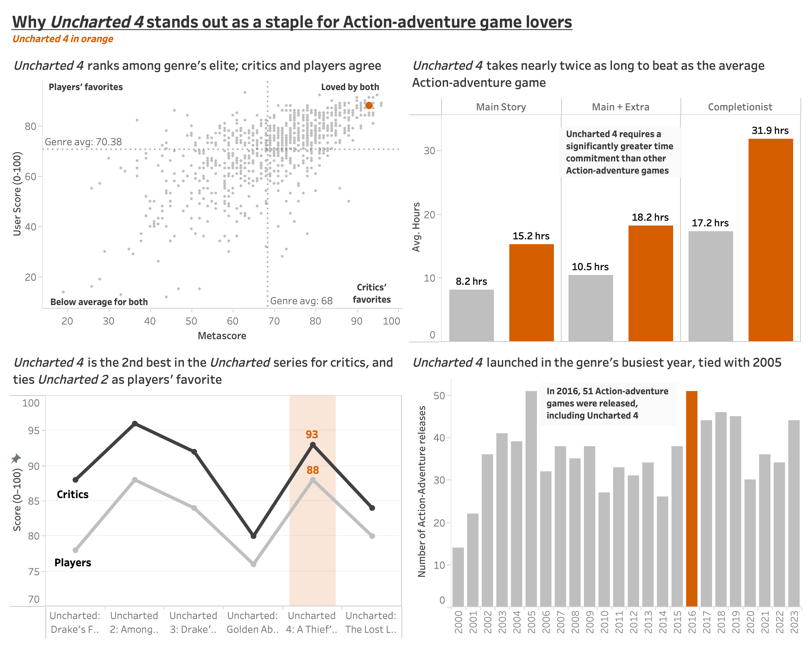
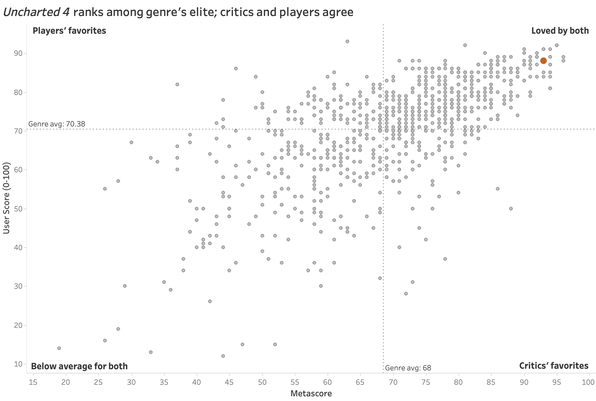
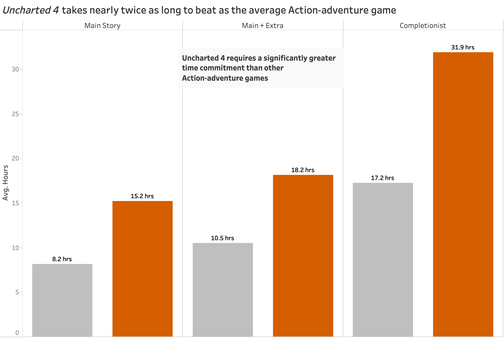
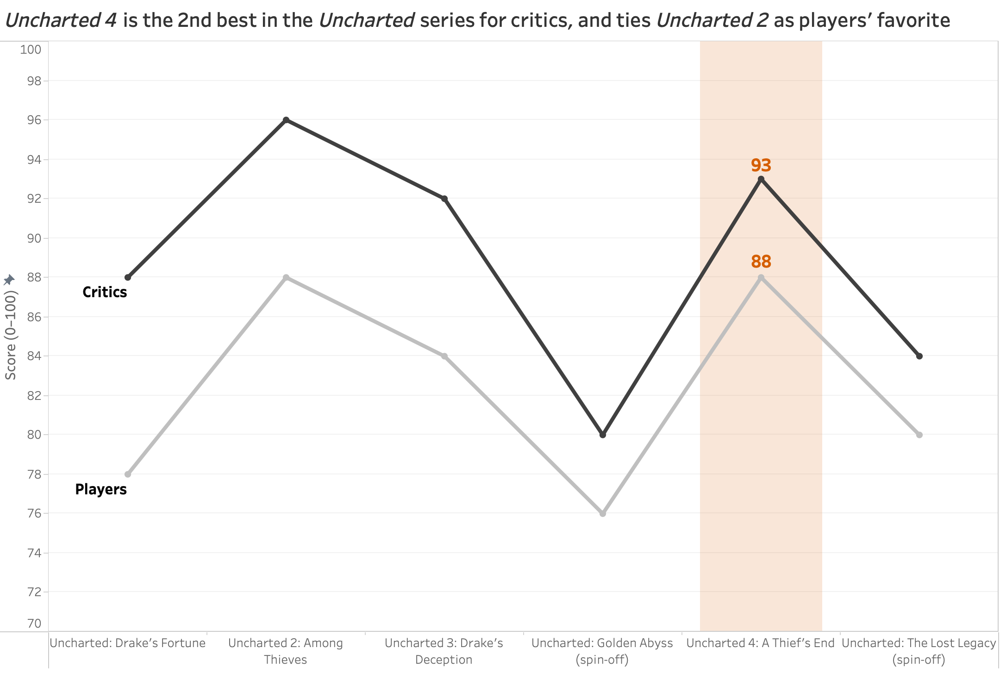
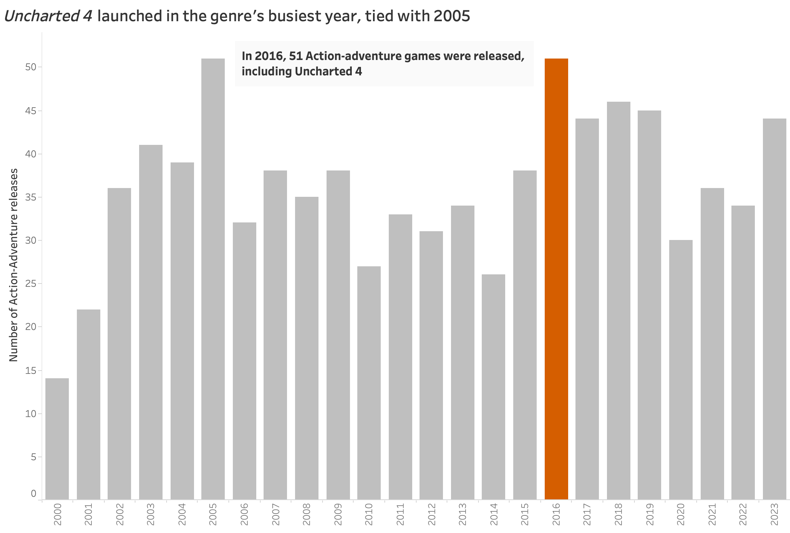

Dashboard · Tableau
Why Uncharted 4 stands out in Action-adventure
I built this dashboard as an assignment for my Business Intelligence with Visual Analytics class, using the Press Start Database. I chose to look at one of my favorite games, Uncharted 4, to see how it compares with other Action-adventure games and what makes it such a successful and impressive game.

Interactive dashboard. Hover any mark for details. Open in Tableau Public
What I found
Uncharted 4 is near the top of the genre with both critics and players, well above the genre average for each. It's also a much bigger game than most in the genre, taking nearly twice as long to beat. Within its own series, critics rank it second behind Uncharted 2, and players rate the two equally. It did all of this in 2016, which tied 2005 as the year with the most Action-adventure releases.
The breakdown
The four charts
Each chart makes one point about the game. Click through to see what each one shows and why I built it that way.

Critics and players agree that it's one of the genre's best
Chart
A scatter plot of Metascore against user score, divided by the genre averages (68 for critics, 70.38 for players).
Why this form
Every game has two scores, and a scatter plot shows both at the same time. The average lines split the plot into four labeled groups, so you can tell right away which group a game falls into.
What to notice
The orange dot for Uncharted 4 sits in the far top-right corner of the "Loved by both" group.

It takes nearly twice as long to beat
Chart
Bars comparing the genre average with Uncharted 4 for three ways of playing: main story only, main story plus extras, and completionist.
Why this form
Putting the bars side by side makes the size difference easy to see. I included all three playstyles so the comparison doesn't depend on one measure that happens to look good.
What to notice
The gap is about the same in every category, roughly 1.7 to 1.9 times longer (for example, 15.2 vs. 8.2 hours for the main story).

It's 2nd in its series for critics and tied for 1st with players
Chart
Critic and player scores for all six Uncharted games, in release order.
Why this form
Putting the games in release order shows how the series rose and fell over time. Having two lines also shows that players consistently score the games a bit lower than critics do.
What to notice
Critics gave it a 93, second only to Uncharted 2 (96). Players gave it an 88, the same as Uncharted 2.

It launched in the genre's busiest year
Chart
The number of Action-adventure games released each year from 2000 to 2023, with 2016 in orange.
Why this form
A simple bar chart over time. The other years stay gray so they give context without pulling attention away from 2016.
What to notice
51 Action-adventure games came out in 2016, tied with 2005 for the most. Uncharted 4 still stood out in that crowded year.
Audience & takeaway
Who this is useful for
One meaningful use case for this dashboard is helping a game studio or publisher see what a standout Action-adventure game looks like. The main question is: what does a game need to stand out in a crowded genre?
Uncharted 4 suggests a few answers. It scored well above the genre average with both critics and players. Even within its own series, where players score every game lower than critics do, players still tied it for their favorite. It gave players about twice as much content as a typical Action-adventure game. And it did this in 2016, the genre's busiest year, so it couldn't rely on a lack of competition.
However, this is only one game, so it doesn't prove that longer or bigger games always do better. A good next step would be to check whether the other games in the "Loved by both" corner share the same traits, like longer playtimes or strong franchise history.